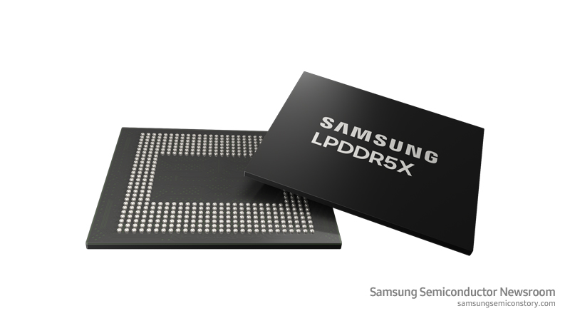
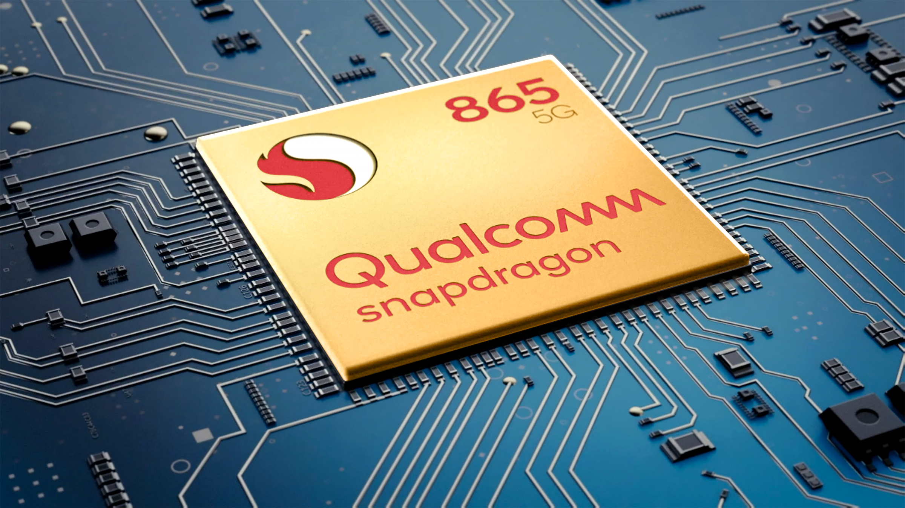
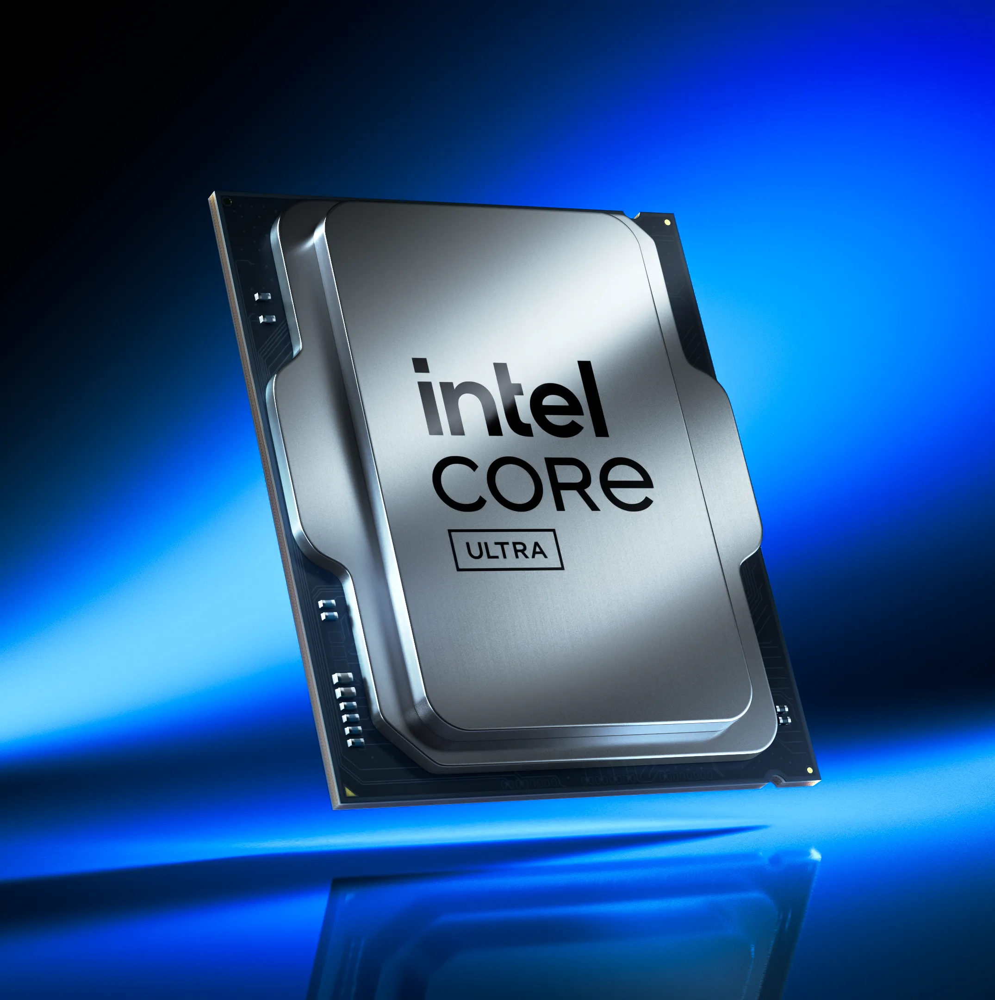
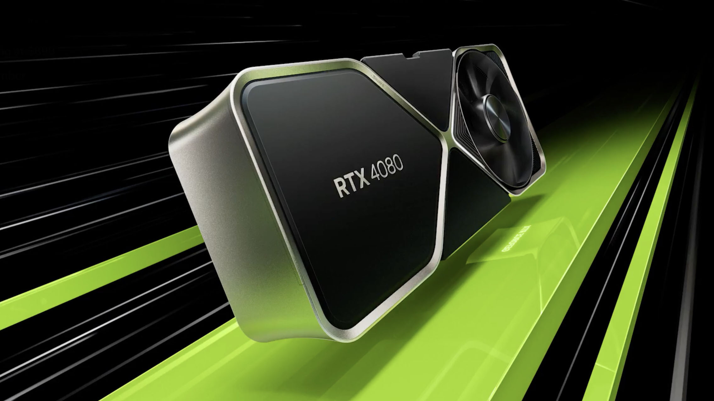
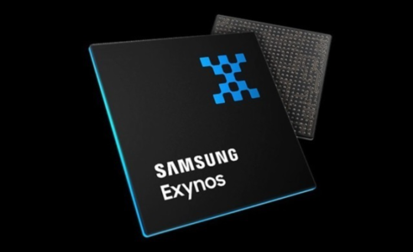

AI now sets the pace for every major industry.AI가 이제 모든 주요 산업의 속도를 정합니다
Growth since 1980, on a log scale.1980년 이후의 성장, 로그 눈금
Two kinds of chips: remember and think.칩은 크게 둘, 기억하는 칩과 계산하는 칩

Memory remembers.메모리는 기억합니다.
It stores data and hands it back: photos, apps, the weights of an AI model.데이터를 저장했다가 돌려줍니다. 사진, 앱, AI 모델의 가중치까지.

Logic (System IC) thinks.로직(비메모리)은 계산합니다.
It runs calculations and makes decisions: the processor in a phone, a PC or an AI server.계산하고 판단합니다. 스마트폰, PC, AI 서버의 프로세서가 여기에 속합니다.
Memory: DRAM and NAND.메모리: DRAM과 NAND
DRAM
Very fast, but it forgets everything when the power goes off. It holds what the computer is working on right now.아주 빠르지만 전원을 끄면 모두 잊습니다. 컴퓨터가 지금 작업 중인 내용을 담아 둡니다.
NAND Flash
Keeps data even without power. This is the storage in phones and SSDs.전원이 꺼져도 데이터를 보관합니다. 스마트폰과 SSD의 저장 장치가 이것입니다.
HBM: the memory AI cannot do without.HBM: AI에 꼭 필요한 메모리
DRAM stacked in layers, placed right next to the GPU.DRAM을 층층이 쌓아 GPU 바로 옆에 붙였습니다.
An AI chip waits for data more than it calculates. HBM stacks DRAM upward and connects it with a very wide, very short link. Each stack has 1024 wires to the GPU; a DDR5 module has 64.AI 칩은 계산보다 데이터를 기다리는 시간이 깁니다. HBM은 DRAM을 위로 쌓고 아주 넓고 짧은 길로 연결합니다. 스택 하나가 GPU와 1024개의 선으로 이어지고, DDR5 모듈은 64개입니다.
The vertical wires (TSV) are holes drilled through thinned silicon. Plasma etching makes those deep, narrow holes.세로 배선(TSV)은 얇게 간 실리콘을 뚫은 구멍입니다. 플라즈마 Etch가 그 깊고 좁은 구멍을 만듭니다.
Logic (System IC): CPU, GPU, AP.로직(비메모리): CPU, GPU, AP

CPU
The general manager. It handles many different jobs, one after another, very well.총괄 매니저. 서로 다른 일을 하나씩, 아주 능숙하게 처리합니다.

GPU
Thousands of small workers doing the same job at once. Graphics and AI.같은 일을 수천 명이 동시에 하는 방식. 그래픽과 AI에 강합니다.

AP
Application Processor: CPU, GPU and more squeezed onto one chip for a smartphone.Application Processor. 스마트폰용으로 CPU, GPU 등을 한 칩에 담았습니다.
Who designs, and who builds?누가 설계하고, 누가 만드는가?
Fabless
Designs chips but owns no factory.칩을 설계하지만 공장은 없습니다.
IDM
Designs and manufactures its own chips. Samsung and Intel also build chips for others.직접 설계하고 직접 만듭니다. Samsung과 Intel은 남의 칩도 만들어 줍니다.
Foundry
Builds chips that other companies designed.다른 회사가 설계한 칩을 대신 만들어 줍니다.
From sand to chip: eight steps.모래에서 칩까지, 여덟 단계
8 Major Steps of Semiconductor Fabrication반도체 제조 8대 공정 (8 Major Steps of Semiconductor Fabrication)
Video · Samsung Semiconductor영상 · 삼성전자 반도체 8대공정